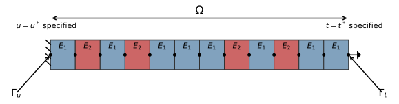

Key insight: The weak form from Lecture 1 and Galerkin’s method from Lecture 2 are fundamentally the same.
Galerkin’s approach (review):
Compute the residual \(Ay_N - f = r_N(x)\)
Force the residual to be orthogonal to each approximation function: \(\int_0^L r_N(x) \phi_i(x)\,dx = 0\), for \(i = 1, 2, \ldots, N\)
Solve the resulting set of coupled equations
However, the primary challenge remains: no systematic way for choosing the approximation functions (yet). The Finite Element Method (FEM) is designed specifically to address this problem — it is based on Galerkin’s method, provides a computationally systematic and efficient approach, removes restrictions on differentiability, and creates a framework for handling complex geometries.
5.3 A 1D Model Problem
Today we start solving our first PDE using the finite element method.
As is often the case in real life problems, materials are not necessarily homogeneous. Moreover, the physical solution we are looking for is not necessarily smooth.
Consider the 1D bar shown below, composed of two different elastic solids:
Code
```{python}#| code-fold: true#| fig-cap: "1D bar composed of two different materials"create_fem_diagram( width=8, height=0.8, num_elements=12, use_gradient=False, element_color='#c0c0c0', show_element_labels=True,)```

1D bar composed of two different materials
The bar is subjected to tractions \(t^*\) on its left side (\(\Gamma_t\)), while the right side is fixed (\(\Gamma_u\)). The bar is composed of two different materials with Young’s moduli \(E_1\) and \(E_2\).
5.4 Strong Form
Code
```{python}#| code-fold: trueprint_styled("The strong form of the PDE:")Strong_form = diff(sigma,x)+fLprint(Eq(Strong_form,0))print_styled('This PDE is a balance of forces, with $f$ being the body force and $\\sigma$ the stress.')print_styled("The boundary conditions:")print_styled("$u|_{\\Gamma_u} = u^*$")print_styled("$t|_{\\Gamma_t} = t^*$")```
The strong form of the PDE:
\(\displaystyle f + \frac{d}{d x} \sigma{\left(x \right)} = 0\)
This PDE is a balance of forces, with \(f\) being the body force and \(\sigma\) the stress.
The boundary conditions:
\(u|_{\Gamma_u} = u^*\)
\(t|_{\Gamma_t} = t^*\)
Since we assume the body to be linearly elastic:
Code
```{python}#| code-fold: trueprint_styled("The stress $\\sigma$ is given by:")Elastic_1d = E*epsilonLprint(Eq(sigma,Elastic_1d))print_styled('where $E$ is the Young\'s modulus and $\\epsilon$ is the strain.')```
The stress \(\sigma\) is given by:
\(\displaystyle \sigma{\left(x \right)} = E \epsilon{\left(x \right)}\)
where \(E\) is the Young’s modulus and \(\epsilon\) is the strain.
For 1D small displacements:
Code
```{python}#| code-fold: trueprint_styled("The strain is:")Strain_1d = diff(u,x)Lprint(Eq(epsilon,Strain_1d))print_styled("We can write the stress as:")Lprint(Eq(sigma,E*diff(u,x)))```
```{python}#| code-fold: trueprint_styled("We can write the weak form as:")weak_form_before_bc = Integral(chain_rule,(x,0,L))-Integral(sigma*Derivative(v,x),(x,0,L))+Integral(f*v,(x,0,L))Lprint(Eq(weak_form_before_bc,0))```
Requiring \(v|_{\Gamma_u}=0\) and \(\sigma|_{\Gamma_t}=t^*\):
Code
```{python}#| code-fold: trueprint_styled("Starting from the boundary term:")weak_form_3 = Integral(chain_rule,(x,0,L))sv = sigma*vLprint(Eq(weak_form_3,sv.subs({x:L})-sv.subs({x:0})))print_styled("Recalling that $v$ is 0 on $\\Gamma_u$:")Lprint(Eq(weak_form_3,t_star*v.subs({x:L})))print_styled("The weak form becomes:")weak_LHS = Integral(sigma*Derivative(v,x),(x,0,L))weak_RHS = Integral(f*v,(x,0,L))+t_star*v.subs({x:L})Lprint(Eq(weak_LHS,weak_RHS))```
\[K_{13} = \int_0^L \frac{d\phi_1}{dx} E \frac{d\phi_3}{dx} \, dx = 0\]
since \(\phi_1\) and \(\phi_3\) have no overlapping support. This pattern shows why FEM matrices have a banded structure — there are only local interactions between adjacent elements.
---title: "Galerkin's Method and 1D FEM"---::: {.content-visible when-format="html"}::: {.callout-tip}## Companion notebooksWork through these hands-on notebooks alongside this chapter:- [03 – 1D Element Stiffness](notebooks/03_1d_element_stiffness.html)- [04 – Exact vs. Gauss Integration](notebooks/04_exact_vs_gauss_integration.html)- [08 – Boundary Conditions 1D](notebooks/08_boundary_conditions_1d.html)::::::## Setup```{python}#| include: false%run _common.pyfrom python.L3 import*phi = create_latex_indexed_function("phi", r"\phi")```## From Last Week**Key insight**: The weak form from Lecture 1 and Galerkin's method from Lecture 2 are fundamentally the same.**Galerkin's approach** (review):1. Compute the residual $Ay_N - f = r_N(x)$2. Force the residual to be orthogonal to each approximation function: $\int_0^L r_N(x) \phi_i(x)\,dx = 0$, for $i = 1, 2, \ldots, N$3. Solve the resulting set of coupled equationsHowever, the primary challenge remains: **no systematic way for choosing the approximation functions (yet)**. The Finite Element Method (FEM) is designed specifically to address this problem — it is based on Galerkin's method, provides a computationally systematic and efficient approach, removes restrictions on differentiability, and creates a framework for handling complex geometries.## A 1D Model ProblemToday we start solving our first PDE using the finite element method.As is often the case in real life problems, materials are not necessarily homogeneous. Moreover, the physical solution we are looking for is not necessarily smooth.Consider the 1D bar shown below, composed of two different elastic solids:```{python}#| code-fold: true#| echo: fenced#| fig-cap: "1D bar composed of two different materials"create_fem_diagram( width=8, height=0.8, num_elements=12, use_gradient=False, element_color='#c0c0c0', show_element_labels=True,)```The bar is subjected to tractions $t^*$ on its left side ($\Gamma_t$), while the right side is fixed ($\Gamma_u$). The bar is composed of two different materials with Young's moduli $E_1$ and $E_2$.## Strong Form```{python}#| code-fold: true#| echo: fencedprint_styled("The strong form of the PDE:")Strong_form = diff(sigma,x)+fLprint(Eq(Strong_form,0))print_styled('This PDE is a balance of forces, with $f$ being the body force and $\\sigma$ the stress.')print_styled("The boundary conditions:")print_styled("$u|_{\\Gamma_u} = u^*$")print_styled("$t|_{\\Gamma_t} = t^*$")```Since we assume the body to be linearly elastic:```{python}#| code-fold: true#| echo: fencedprint_styled("The stress $\\sigma$ is given by:")Elastic_1d = E*epsilonLprint(Eq(sigma,Elastic_1d))print_styled('where $E$ is the Young\'s modulus and $\\epsilon$ is the strain.')```For 1D small displacements:```{python}#| code-fold: true#| echo: fencedprint_styled("The strain is:")Strain_1d = diff(u,x)Lprint(Eq(epsilon,Strain_1d))print_styled("We can write the stress as:")Lprint(Eq(sigma,E*diff(u,x)))```## Getting the Weak FormTo get the weak form we multiply by a test function $v$ and integrate over the domain $\Omega$:```{python}#| code-fold: true#| echo: fencedresidual = Integral(r*v, (x,0,L))weak_term = Integral((diff(sigma,x)+f)*v, (x,0,L))Lprint(Eq(weak_term,0))```Using integration by parts:```{python}#| code-fold: true#| echo: fencedprint_styled("Using integration by parts:")chain_rule = Derivative(sigma*v,x)Lprint(Eq(chain_rule,chain_rule.doit(),evaluate=False))print_styled("And thus:")Lprint(Eq(v*Derivative(sigma,x), Derivative(sigma*v,x)-sigma*Derivative(v,x)))``````{python}#| code-fold: true#| echo: fencedprint_styled("We can write the weak form as:")weak_form_before_bc = Integral(chain_rule,(x,0,L))-Integral(sigma*Derivative(v,x),(x,0,L))+Integral(f*v,(x,0,L))Lprint(Eq(weak_form_before_bc,0))```Requiring $v|_{\Gamma_u}=0$ and $\sigma|_{\Gamma_t}=t^*$:```{python}#| code-fold: true#| echo: fencedprint_styled("Starting from the boundary term:")weak_form_3 = Integral(chain_rule,(x,0,L))sv = sigma*vLprint(Eq(weak_form_3,sv.subs({x:L})-sv.subs({x:0})))print_styled("Recalling that $v$ is 0 on $\\Gamma_u$:")Lprint(Eq(weak_form_3,t_star*v.subs({x:L})))print_styled("The weak form becomes:")weak_LHS = Integral(sigma*Derivative(v,x),(x,0,L))weak_RHS = Integral(f*v,(x,0,L))+t_star*v.subs({x:L})Lprint(Eq(weak_LHS,weak_RHS))```## The Weak FormTo get the final weak form in terms of the displacement $u$, we introduce the constitutive and kinematic relations:```{python}#| code-fold: true#| echo: fencedprint_styled("Substituting the constitutive relation:")weak_LHS_sub = weak_LHS.subs({sigma:E*diff(u,x)})Lprint(Eq(weak_LHS_sub,weak_RHS))```The final equation is the **Weak Form** or **Variational Formulation**. We can write it as:$$\mathbb{B}(u,v) = \mathbb{F}(v)$$where:- $\mathbb{B}(u,v) = \int_0^L \frac{dv}{dx} E \frac{du}{dx} \, dx$ represents internal virtual work- $\mathbb{F}(v) = \int_0^L f v \, dx + t^* v|_{\Gamma_t}$ represents external virtual workThis form requires less smoothness on the solution $u$ compared to the strong form and is the starting point for the Finite Element Method.## Function Spaces for the Weak FormFor well-defined integrals, we need:$$\forall v, \quad \int_0^L \frac{dv}{dx} \sigma \, dx < \infty, \quad \int_0^L f v \, dx < \infty$$This leads to using Sobolev spaces:$$u \in H^1(\Omega) \iff \int_\Omega \frac{du}{dx}\frac{du}{dx} \, dx + \int_\Omega u\, u \, dx < \infty$$Our problem becomes: Find $u \in H^1(\Omega)$, $u|_{\Gamma_u} = u^*$, such that $\forall v \in H^1(\Omega)$, $v|_{\Gamma_u} = 0$:$$\int_0^L \frac{dv}{dx} E \frac{du}{dx} \, dx = \int_0^L f v \, dx + t^* v|_{\Gamma_t}$$## Approximating the SolutionWe discretize the problem using:$$u_N \approx u(x) = \sum_{j=1}^{N} a_j \phi_j(x), \quad v = \phi_i(x)$$This gives us a linear system $[K]\{a\} = \{F\}$ where:$$K_{ij} = \int_0^L \frac{d\phi_i}{dx} E \frac{d\phi_j}{dx} \, dx, \qquad F_i = \int_0^L f \phi_i \, dx + t^* \phi_i|_{\Gamma_t}$$## Basis Functions in FEMThe key insight of FEM is a systematic way to construct basis functions:- Functions are built piecewise over subdomains ("elements")- Usually low-degree polynomials- Smooth enough to be in $H^1(\Omega)$- Form a nodal basis where $\phi_i(x_j) = \delta_{ij}$ (Kronecker delta)- The sum over the basis functions satisfies: $\sum_{j\in \text{element}} \phi_j(x) = 1$ (partition of unity)- Each basis function is non-zero only on elements sharing node $i$### Linear ElementsFor linear elements, we define:$$\phi_i(x) =\begin{cases}\frac{x-x_{i-1}}{h_i}, & x_{i-1} \leq x \leq x_i \\1 - \frac{x-x_i}{h_{i+1}}, & x_i \leq x \leq x_{i+1} \\0, & \text{otherwise}\end{cases}$$where $h_i = x_i - x_{i-1}$. The derivatives are:$$\frac{d\phi_i}{dx} =\begin{cases}\frac{1}{h_i}, & x_{i-1} \leq x \leq x_i \\-\frac{1}{h_{i+1}}, & x_i \leq x \leq x_{i+1} \\0, & \text{otherwise}\end{cases}$$### Visualization of Basis Functions```{python}#| code-fold: true#| echo: fenced#| fig-cap: "Lagrange shape functions of degree 1, 2, and 3"fem_viz = FEMShapeFunctions()fig1 = fem_viz.plot_multielement_shape_functions( num_elements=3, element_type='lagrange', degrees=[1, 2, 3])``````{python}#| code-fold: true#| echo: fenced#| fig-cap: "Derivatives of Lagrange shape functions"fem_viz = FEMShapeFunctions()fig2 = fem_viz.plot_multielement_shape_function_derivatives( num_elements=3, element_type='lagrange', degrees=[1, 2])``````{python}#| code-fold: true#| echo: fenced#| fig-cap: "Partition of unity for linear elements"fem_viz = FEMShapeFunctions()fig3 = fem_viz.plot_multielement_partition_of_unity_per_element( num_elements=3, degree=1)```## Building the Stiffness MatrixFor example, to compute $K_{11}$:$$K_{11} = \int_0^L \frac{d\phi_1}{dx} E \frac{d\phi_1}{dx} \, dx = \int_0^{x_1} E \frac{1}{h_1^2} \, dx = \frac{1}{h_1^2} \int_0^{x_1} E(x) \, dx$$Similarly for $K_{12}$:$$K_{12} = \int_0^L \frac{d\phi_1}{dx} E \frac{d\phi_2}{dx} \, dx = -\frac{1}{h_1^2} \int_0^{x_1} E(x) \, dx$$And computing $K_{13}$:$$K_{13} = \int_0^L \frac{d\phi_1}{dx} E \frac{d\phi_3}{dx} \, dx = 0$$since $\phi_1$ and $\phi_3$ have no overlapping support. This pattern shows why FEM matrices have a **banded structure** — there are only local interactions between adjacent elements.## Element-wise AssemblyWe recognize that:$$K_{ij}^g = \sum_{\text{elem}} K_{ij}^e, \quad \text{where } K_{ij}^e = \int_{\Omega_e} \frac{d\phi_i}{dx} E \frac{d\phi_j}{dx} \, dx$$$$F_i^g = \sum_{\text{elem}} F_i^e, \quad F_i^e = \int_{\Omega_e} \phi_i f \, dx + t^* \phi_i|_{\Gamma_t \cap \Omega_e}$$This element-wise assembly is key to FEM efficiency.## Reference Element TransformationTo make calculations systematic, we define a master (reference) element in a local coordinate system $\zeta \in [-1, 1]$.We need a mapping from reference to physical coordinates:$$x = \sum_{i=1}^2 \chi_i \hat{\phi}_i(\zeta) = M_x(\zeta)$$where $\chi_i$ are the physical coordinates of the nodes and $\hat{\phi}_i(\zeta)$ are the shape functions in reference coordinates.**Shape Functions in Reference Space:** For linear elements in 1D:$$\hat{\phi}_1 = \frac{1}{2}(1-\zeta) \quad \text{and} \quad \hat{\phi}_2 = \frac{1}{2}(1+\zeta)$$## Differential RelationsWe need the mapping between derivatives:$$\frac{d}{d\zeta} = \frac{dx}{d\zeta}\frac{d}{dx} = J \frac{d}{dx}$$And the inverse relation:$$\frac{d}{dx} = \frac{d\zeta}{dx}\frac{d}{d\zeta} = \frac{1}{J}\frac{d}{d\zeta}$$where $J = \frac{dx}{d\zeta}$ is the Jacobian of the transformation.## Numerical Integration: Gaussian QuadratureFor numerical integration, we use Gaussian quadrature:$$\int_{x_i}^{x_{i+1}} F(x) \, dx = \int_{-1}^1 F(x(\zeta)) J(\zeta) \, d\zeta \approx \sum_{q=1}^G w_q F(x(\zeta_q)) J(\zeta_q)$$Gauss quadrature can integrate a polynomial of order $2G-1$ exactly with $G$ points.| Gauss rule | $\zeta_i$ | $w_i$ ||:----------:|:---------:|:------:|| 2 | $\pm 0.5773502692$ | 1.0 || 3 | 0.0 | 0.8888888889 ||| $\pm 0.7745966692$ | 0.5555555556 |Two points are sufficient for linear elements since the integrands in $K_{ij}$ have at most cubic terms.## Computing Element Matrices with QuadratureThe element stiffness matrix is computed as:$$K_{ij}^e = \sum_{q=1}^G w_q \left[\frac{d\hat{\phi}_i}{d\zeta}\frac{d\zeta}{dx}\right] E \left[\frac{d\hat{\phi}_j}{d\zeta}\frac{d\zeta}{dx}\right] J \bigg|_{\zeta=\zeta_q}$$Similarly for the force vector:$$F_i^e = \sum_{q=1}^G w_q \hat{\phi}_i(\zeta_q) f(x(\zeta_q)) J(\zeta_q)$$plus any boundary terms.## Post-ProcessingAfter obtaining the nodal values $a_i$, we can compute:- **Displacements** at any point: $u(x) = \sum_{i=1}^N a_i \phi_i(x)$- **Strains** at any point: $\varepsilon(x) = \frac{du}{dx} = \sum_{i=1}^N a_i \frac{d\phi_i}{dx}$- **Stresses** at any point: $\sigma(x) = E(x) \sum_{i=1}^N a_i \frac{d\phi_i}{dx}$## Implementing Boundary ConditionsEssential (Dirichlet) boundary conditions (e.g., $u(0) = u^*$):$$\begin{bmatrix}1 & 0 & \ldots & \ldots & 0 \\K_{21} & K_{22} & \ldots & \ldots & K_{2N} \\\vdots & \vdots & \ddots & \vdots & \vdots \\K_{N1} & K_{N2} & \ldots & \ldots & K_{NN}\end{bmatrix}\begin{bmatrix}a_1 \\ a_2 \\ \vdots \\ a_N\end{bmatrix}=\begin{bmatrix}u^* \\ F_2 \\ \vdots \\ F_N + \ldots\end{bmatrix}$$